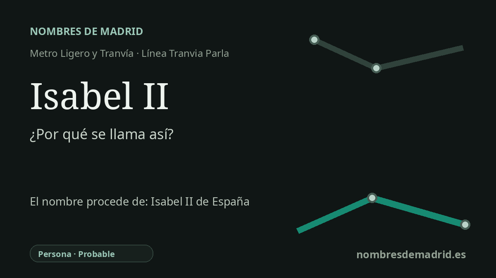

Publicado el · Investigación de Nombres de Madrid · Cómo verificamos cada origen · 8 fuentes consultadas
Respuesta rápida
La parada del tranvía de Parla toma su nombre de la cercana calle Isabel II, casi con seguridad dedicada a la reina Isabel II de España, que reinó entre 1833 y su destronamiento en 1868. No se ha localizado el acuerdo municipal exacto que dio nombre a la calle o a la parada.
La historia del nombre
La parada Isabel II pertenece al Tranvía de Parla y el Consorcio Regional de Transportes de Madrid la registra como estación en superficie en la calle Reyes Católicos, 73. La explicación más sólida de su nombre es su ubicación junto a la calle Isabel II de Parla, no una dedicatoria independiente documentada en las fuentes de transporte.
El nombre Isabel II remite a María Isabel Luisa de Borbón y Borbón-Dos Sicilias, la reina Isabel II de España. Las fuentes biográficas autorizadas la identifican como nacida en Madrid en 1830, proclamada reina siendo niña en 1833 y destronada tras la Revolución de 1868; falleció en París en 1904.
En Parla, el callejero del entorno refuerza esta lectura. Documentos oficiales y registros cartográficos sitúan la calle Isabel II cerca de la calle Reyes Católicos y de otras vías con nombres regios, como Alfonso X, Fernando III y Felipe II. Así, la parada forma parte de un vocabulario urbano local asociado a la monarquía española, aunque no se ha localizado el acuerdo municipal concreto que dio nombre a la calle Isabel II.
La ficha actual acierta al relacionar a Isabel II con la llegada del ferrocarril. Durante su reinado se inauguró, el 9 de febrero de 1851, la línea Madrid-Aranjuez, primer ferrocarril madrileño y segundo de la Península tras el Barcelona-Mataró. La Gaceta de Madrid describió la presencia de la familia real en el acto y señaló que el tren real tardó una hora y cinco minutos, mientras que fuentes institucionales posteriores presentan la línea como un paso decisivo en la conexión de Madrid con Aranjuez, el sur y el eje mediterráneo.
En la explicación pública, la explicación más prudente es clara: la parada toma el nombre de la calle próxima, y esa calle alude casi con seguridad a la reina Isabel II de España. El episodio ferroviario aporta contexto histórico, pero no prueba el motivo de la denominación. Hasta revisar un expediente municipal de nomenclátor o callejero histórico de Parla, la etimología debe considerarse probable y no plenamente verificada.